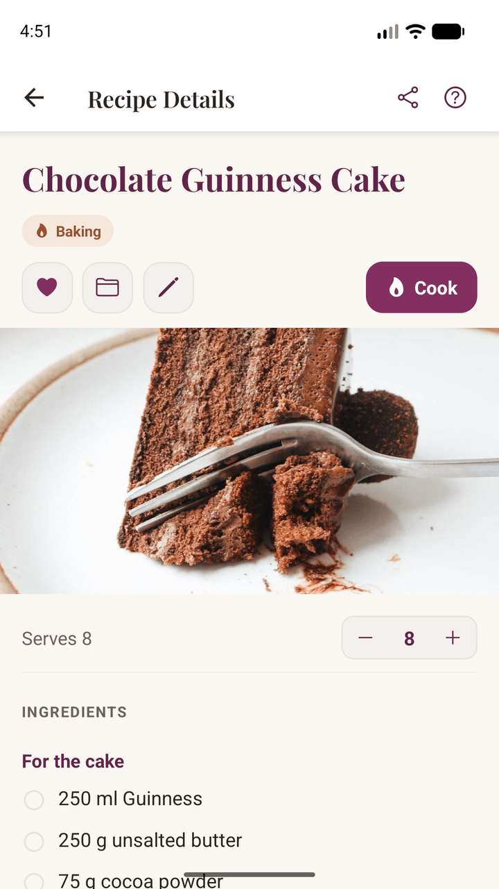
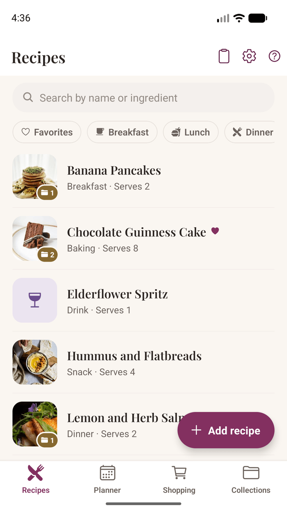
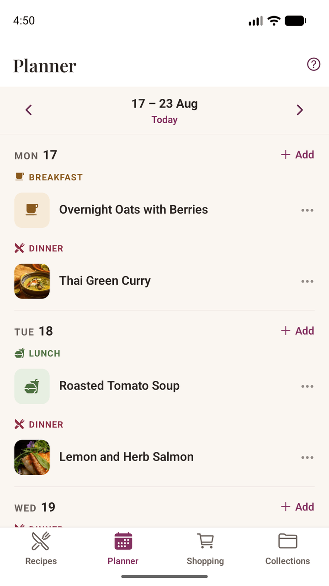
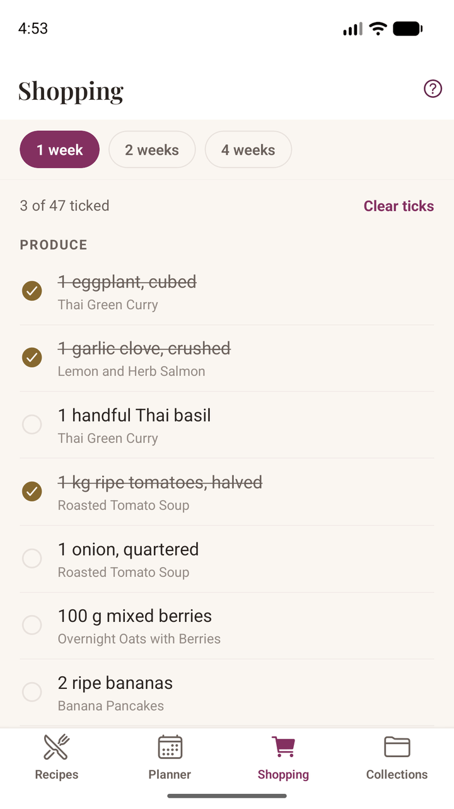
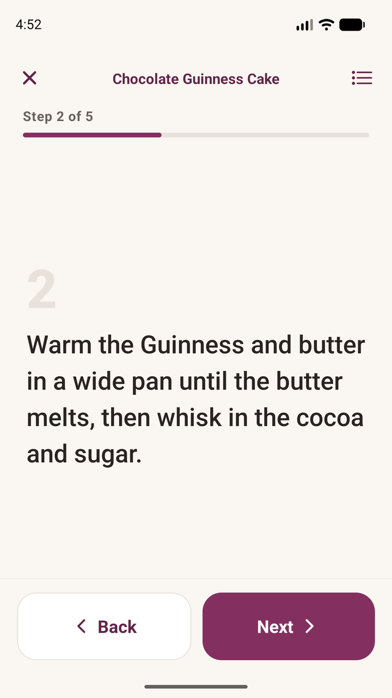
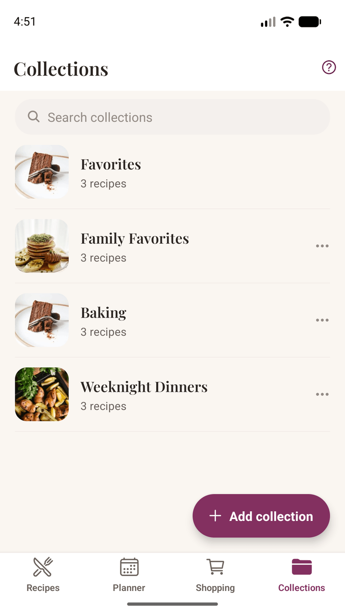

Se acabaron las capturas de pantalla, los marcadores y las notas sueltas. Importa una receta desde un enlace o fotografía la página de un libro de cocina, organiza la semana a partir de ella y llévate la lista de la compra al súper. Todo vive en tu teléfono: sin cuenta, sin suscripción, y funciona incluso sin cobertura.
Para Android, en español y en inglés.


Todo lo necesario para guardar las recetas que te gustan y cocinarlas de verdad, y nada con lo que tengas que registrarte, sincronizar ni pagar cada mes.
Importa desde cualquier web de recetas o pega el texto de una publicación de Instagram o TikTok. Damson Kitchen separa los ingredientes y la preparación, y los ordena por secciones cuando la receta las tiene.
Fotografía la página de un libro, una ficha de receta o una nota escrita a mano, y el texto se lee directamente. Esa lectura se hace en tu teléfono: nunca se sube ninguna foto de tus recetas. Una receta larga se puede escanear página a página.
Un paso cada vez, con letra grande que se lee a un brazo de distancia y con las manos llenas de harina. La pantalla no se apaga mientras cocinas y los ingredientes están siempre a un toque.
Coloca las recetas en los días en que vas a cocinarlas, en una semana que empieza el día que empieza la tuya. Añade una ocasión para una comida de cumpleaños e indica para cuántos cocinas: las cantidades se ajustan solas.
Se crea a partir de las comidas que de verdad has planificado, agrupada por secciones del súper para que no vayas de un pasillo a otro. Dos recetas que llevan harina se convierten en una sola línea, no en dos.
Agrupa tus recetas en colecciones: cenas entre semana, repostería navideña, comidas para toda la semana. Marca con un corazón las que repites, filtra por desayuno o postre, y busca por ingrediente para encontrar todo lo que cocinas con limón.
Cambia el número de raciones y todas las cantidades se ajustan, en fracciones que de verdad usarías, no en decimales raros. La receta siempre conserva sus cantidades originales.
Todo vive en tu teléfono: no se sube nada y no se comparte nada. Cuando cambies de teléfono, guarda toda tu colección en un único archivo de copia de seguridad y llévatela.
Haz una foto de lo que has cocinado y añádela. Apunta el cambio que funcionó o la sustitución que quieres recordar. Cuando importas desde un enlace traemos el texto, nunca la foto de otra persona.
Envía por mensaje o correo una receta que hayas escrito tú, como texto que se puede leer sin instalar nada. Las recetas importadas envían en su lugar el enlace original, para que el mérito siga siendo de quien la escribió.
Todo vive en tu propio teléfono. No hay que crear ninguna cuenta, no se sube nada y ningún servidor guarda tu colección. Por eso funciona sin cobertura, y por eso nadie puede quitártela ni empezar a cobrarte por ella más adelante.
Solo tus recetas, guardadas como a ti te gustan, listas cuando las necesites.
Tus recetas ya están en tu teléfono, así que no hay nada que cargar. Una cocina con mala señal, la casa de un amigo, una casa rural perdida: todo funciona igual.
Un recetario es algo que se tiene, no algo que se alquila. Sin cuota mensual y sin riesgo de perder tu colección por dejar de pagar.
Exporta toda tu colección a un único archivo cuando quieras y pásala tú mismo a un teléfono nuevo. Nada te ata, porque no hay nada a lo que atarse.
Nadie más ve lo que guardas, nada lo clasifica y nada está pensado para engancharte. Es un recetario, no un escaparate.
Comparte un enlace de un blog de cocina o una red social, fotografía la página de un libro, pega un texto o simplemente escribe la receta. Vale cualquier origen.
Ponla en un día de la semana, indica para cuántos cocinas y deja que la lista de la compra se haga sola: sumada y ordenada por secciones.
Abre el modo cocina y avanza paso a paso, con la pantalla encendida y las manos libres. Después, apunta lo que cambiarías.




Damson Kitchen es gratis en Android. No hay que crear ninguna cuenta ni suscribirse a nada: instálala y empieza con las recetas que ya te encantan.
La aplicación está en español y en inglés, y lee recetas en los dos idiomas: puedes guardar una receta en inglés en un teléfono en español, y se ajustará igual de bien. Los idiomas llegan de uno en uno porque la aplicación lee las recetas que pegas, escribes y fotografías, y saber qué línea es un ingrediente, o qué significa «1½ cucharada», hay que enseñárselo idioma a idioma.